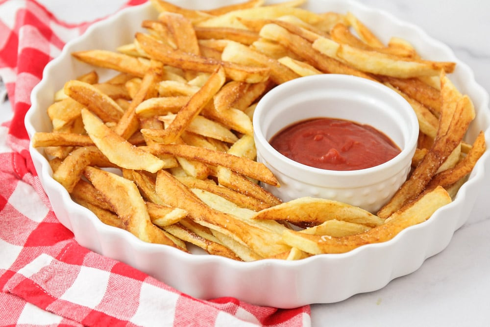

French Fries

Description:
"French" fries are a popular know dish in the U.S.A. Although the name and where there are widely found throw off people as to where there from you'll be surprised to hear that they don't origin in neither France nor the U.S.A.
No first of all they aren't french, they actually come from Belgium or claim to be, no one really knows for sure.
Regardless of where there from they can be extremely tasty
So in this recipe we're going to teach you how to make some of the crunchiest and most delicious golden fries.
for more information about french fries and there unique origin click here
To make these amazing fries the following ingredients are needed
Other not required but useful things to have
- Sizable pan
- Potato cutter/peeler
- napkins
Steps
- Peel and rinse the potatoes. Then cut them into sticks by cutting the potato in 4 or 5 vertical pieces, and then cutting each piece into sticks.
- Place them in a large bowl and cover with cold water. Allow thm to soak, 2 to 3 hours.
- When you're ready to make the fries, drain off the water and lay the potatoes on 2 baking sheets lines with paper towels. Blot with paper towels to dry them.
- Heat a few inches of oil in a heavy pot to 300 degrees F. In 3 or 4 batches, cook the potatoes until soft, 4 to 5 minutes per batch. They should not be completely cooked, this is just to start the cooking procedure.
- Remove the potatoes and place them on a fresh paper towels. Once all potatoes have been fried at 300 F, turn up the heat to about 400 degrees F. At this point start frying the potatoes in batches again, this time cooking until potatoes are completely golden.
- Finished, top with a pinch of salt and enjoy.